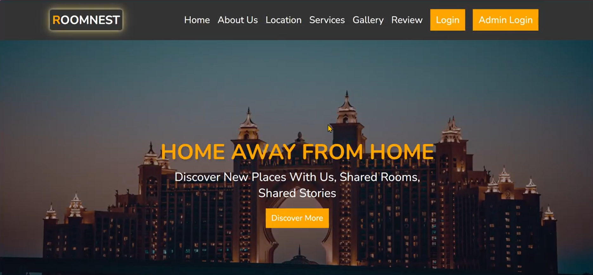
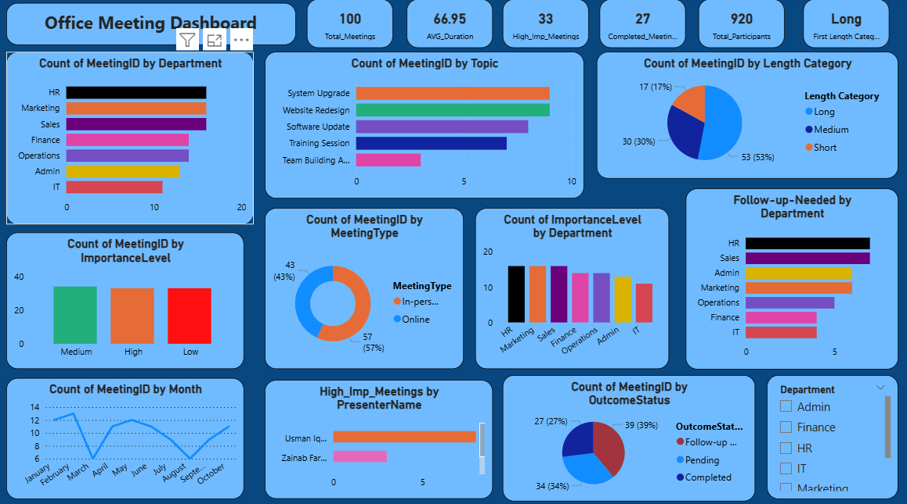
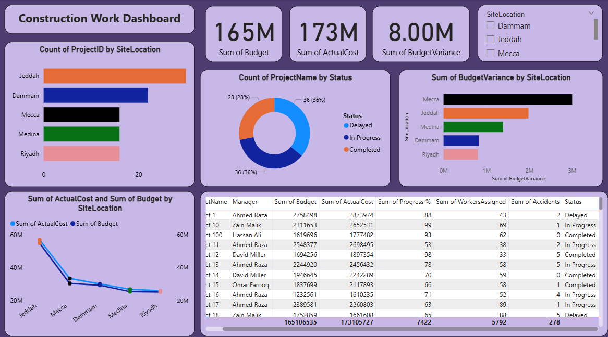
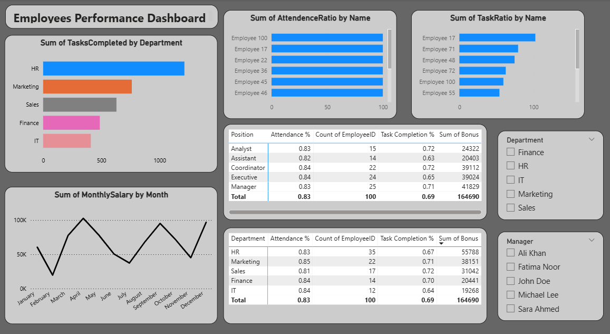
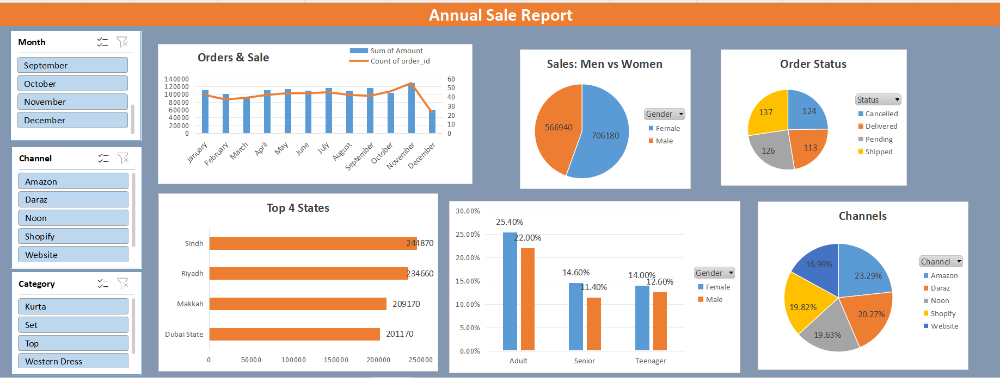

Hi, I'm Ateeq — Data Analyst & Developer. A Collection of My Projects. Turning Data Into Meaningful Stories. Discover My Work & Journey.

ROOM NEST
RoomNest is a web-based platform designed to help university students easily find and book hostels near their campuses. The system allows students to search for available hostels based on location, budget, and facilities. Hostel owners can also register their properties, upload details, and manage room availability through an admin dashboard.
- Students can search hostels by university name, price range, or amenities.
- Each listing includes detailed information such as address, rent, and contact details.
- Separate login systems for students and hostel owners.
- Students can reserve rooms or schedule visits directly through the website.
- Admin can manage users, hostels, and monitor system activities.
HTML, CSS, JavaScript, PHP, MySQL (Database), Bootstrap.
To provide an easy-to-use digital solution for students to find affordable and comfortable hostels near their universities, saving time and effort compared to traditional searching methods.

Office Meeting Analysis Dashboard
The Office Meeting Analysis Dashboard is an interactive Power BI report designed to help organizations understand the effectiveness and productivity of their internal meetings. The dashboard provides a clear, data-driven view of how meetings are conducted, which topics receive the most attention, and how employees participate across different sessions.
- Meeting frequency and duration trends.
- Most discussed topics and their importance.
- Employee engagement levels during meetings.
- Action items and follow-up status.
- Attendance patterns across departments.
This project demonstrates my skills in data modeling, DAX formulas, business analysis, and Power BI visualization to turn raw meeting data into meaningful insights.
With visually appealing charts and KPIs, the dashboard helps management make better decisions—such as reducing unnecessary meetings, improving topic planning, and increasing overall meeting effectiveness.

Construction Work Ana Dashboard
The Construction Work Dashboard is a comprehensive Power BI report designed to monitor, track, and analyze ongoing construction projects in real time. It helps project managers, engineers, and stakeholders clearly understand project progress, resource utilization, budget status, and potential delays.
- Project progress tracking (completed vs. pending tasks).
- Budget vs. actual spending analysis.
- Labor performance and attendance.
- Daily, weekly, and monthly work updates.
- Site safety indicators and incident tracking.
This project highlights my capabilities in data visualization, DAX calculations, reporting analytics, and building real-time monitoring dashboards for project-based industries.
With interactive visuals and dynamic filtering, the dashboard allows users to quickly identify issues, evaluate work performance, and forecast project timelines. It enhances decision-making by presenting construction data in a clear and actionable way.

Urban Market Sales perf. Dashboard
The Urban Market Sales Dashboard is an interactive Power BI solution designed to analyze sales performance across rapidly growing urban markets. It helps businesses understand customer behavior, product demand, revenue trends, and store performance in different city zones.
- Total sales, revenue trends, and growth patterns.
- Customer segmentation based on age, gender, and location.
- Daily, weekly, and monthly sales comparisons.
- Top-selling products across urban regions.
- Profitability and discount impact analysis.
This project demonstrates my skills in data cleaning, modeling, DAX calculations, and building powerful analytical dashboards that support strategic decision-making.
With intuitive visuals and dynamic filters, the dashboard allows businesses to quickly identify opportunities, optimize product offerings, and improve marketing strategies for urban consumers.

Employees Performance Dashboard
The Employee Performance Dashboard is a dynamic Power BI report designed to evaluate, monitor, and improve employee performance across an organization. It provides HR teams and managers with real-time insights into workforce productivity, engagement, and achievement of key performance indicators (KPIs).
- Attendance and punctuality tracking.
- Task completion rates and deadlines met.
- Top performers and employees needing support.
- Department-wise performance comparisons.
- Monthly productivity trends.
This project highlights my expertise in data modeling, KPI design, DAX formulas, and building HR-focused analytical dashboards using Power BI.
Through interactive charts, slicers, and KPIs, this dashboard helps organizations make informed decisions about promotions, rewards, training programs, and workload distribution. It also supports identifying performance gaps and improving overall efficiency.

Annual Sale Report Dashboard Excel
The Annual Sales Report Dashboard is an interactive Excel-based analytics solution designed to track and summarize a company’s yearly sales performance. Built using advanced Excel tools, the dashboard provides a clear view of revenue trends, product performance, customer insights, and overall business growth throughout the year.
- Total yearly sales and revenue growth.
- Month-by-month sales comparison.
- Top-performing products and categories.
- Regional sales distribution.
- Customer purchase patterns and frequency.
This project demonstrates my skills in Excel analytics, data cleaning, visualization, and building professional dashboards for business performance tracking.
The dashboard uses Pivot Tables, Pivot Charts, slicers, conditional formatting, and formulas to make the report fully dynamic and easy to explore. Managers can filter data by month, region, or category to quickly identify trends and make informed business decisions.
